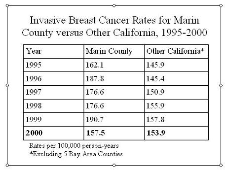

Use of Incidence Rate - Calculate from Population Based Registries
Advantage of Using Incidence Rate
There are a number of advantages of rates. One is the ability to calculate rates from population based registries.
- Registries capture the events in a defined geographic region, and a good registry will capture nearly all the events.
- So the numerator (E) for disease outcomes with registries is readily available.
But how would those events be applied to the population covered by the registry if you tried to calculate a cumulative incidence at one year?
- Individuals are entering and leaving the population throughout the year, but you have no ready way to record all that and link it with an outcome variable of diseased or censored, as you need to do for a Kaplan-Meier analysis.
We will look at an example of how a rate is calculated in this situation using the average population at risk method.
Calculating a Rate
Research question:
- What is the incidence rate for first diagnoses of breast cancer in Marin County?
- How does it compare with rates from other counties?
Nearly all new breast cancer diagnoses are reported to the SEER cancer registry
How do we obtain a denominator for a rate?
The cancer registry does an excellent job of capturing all of the new cancer diagnoses (E) for a large population. California now has a statewide cancer registry. Clearly, an investigator with access to the California registry data is not going to have individual level data on when every new arrival entered the state and when every departure or death took place, so the problem is to obtain information that will allow calculation of a rate.
The approach is to obtain an estimate of the average population size during the time period. Multiplied by the time period, usually one year, gives a person-time denominator for the rate. Census data provide the information to form this person-time denominator.
Large Population Time Rates
"Since the production of stable rates for cancers at most individual sites requires a population of at least one million subjects, the logistic and financial problems of attempting to maintain a constant surveillance system [of everyone in the population] are usually prohibitive." Breslow and Day, Statistical Methods in Cancer Research
TO GET A DENOMINATOR FOR A RATE: Do surveillance of all the cancer diagnoses and estimate the population denominator to get person-time at risk.
To get an incidence rate person-time denominator by the group method requires only an
- estimate of the average population size during the year (=the population at mid-year).
A further advantage of using census data for forming rates from case counts collected by registries is that rates can be formed for any of the grouping variables recorded in the census, such as age groups, gender, ethnicity, income, geographic sub-regions, and many others.
Average Population (Group data) Rates versus Individual Data Rates
If losses are perfectly uniform, total person-time calculation for the denominator (and thus the rate)
- is the same whether based on average population size or individual follow-up.
For large populations the rate will be nearly identical calculated by either method.
Potential Weakness of Using Census Data
Calculating rates from census population data is very useful but caution is required as a full census is only done every 10 years.
Interim estimates of population change is made by the Census but over 10 years denominators may become inaccurate
Although not the only source of person-time denominators for calculating rates, census data are a major resource for such calculations. Researchers using census data should be aware that the possibility of bias increases with time from the last census even though estimated adjustments using the current population survey are made annually by the census. In some cases this has resulted in incorrect rates.
Example: Breast Cancer Estimates
A very good example of how census data can affect inferences is seen in the rates of breast cancer in Marin and San Francisco Counties compared to the rest of California and to U.S. rates (seen in the table below).

Based on 1990 census data and extrapolations of the 1990 census the rates were significantly higher. It now appears since the 2000 census became available that the population grew faster in the 1990's in Marin County than the Census estimate, so the denominators used were too small and the rates higher than they should have been.
The rate for 2000 using the new census is not very different from the rest of California outside the Bay Area.
Jeff Martin, MD
-- MaryB - 03 Mar 2009